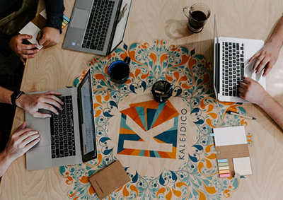

Full Stack Developer

Ben Meryem Kılıç, 2001 yılında Şanlıurfa’da doğdum ve dört kişilik bir ailenin ikinci çocuğuyum. Küçüklüğümden beri yazı yazmaya ilgi duyuyor ve bu tutkumu hayatımın her alanına yansıtıyorum.
Liseyi GAP Anadolu Lisesi’nde tamamladıktan sonra Batman Üniversitesi’nde Bilgisayar Mühendisliği bölümüne başladım ve 2025 yılında mezun oldum. Üniversite yıllarım boyunca farklı insanlarla tanışarak değerli dostluklar kurdum, yeni alanlara ilgi duydum ve birçok beceri kazandım.
Hayatım boyunca kendimi geliştirmeyi, yeni deneyimlere açık olmayı ve öğrendiklerimi paylaşmayı ilke edindim..
Geleceğe yön veren teknolojiler geliştirmek ve bu süreçte insan hayatına değer katmak vizyonumun temelini oluşturuyor. Web geliştirme, siber güvenlik ve yapay zeka gibi alanlarda öncü çalışmalar yapmayı hedefliyorum. Yenilikçi çözümler üreterek problem çözme süreçlerini daha verimli hale getirmek istiyorum.
Bilgimi sürekli güncelleyerek ve yeni beceriler edinerek kendimi geliştirmeye kararlıyım. Doğadan ilham alarak ve farklı kültürlerden beslenerek vizyonumu genişletiyorum. Farklı disiplinlerde deneyim kazanarak y aratıcılığımı ve bilgi birikimimi zenginleştiriyorum. Teknolojiyi insanlar için daha erişilebilir ve faydalı hale getirmeyi amaçlıyorum. Ekip çalışmasının gücüne inanıyor ve ortak hedefler doğrultusunda işbirliği yapmayı önemsiyorum.
Topluma fayda sağlayacak projelere öncülük etmek için tutkuyla çalışıyorum. Her zaman yenilikleri takip ederek, değişimin ve gelişimin bir parçası olmayı amaçlıyorum.
Teknolojiyi insan hayatını kolaylaştıran ve dönüştüren bir araç olarak kullanmayı hedefliyorum. Web geliştirme, siber güvenlik ve yapay zeka alanlarında yenilikçi ve etkili çözümler üretmeyi amaçlıyorum.
Problem çözme becerilerimi kullanarak, karşılaşılan zorluklara pratik ve sürdürülebilir çözümler sunuyorum. Sürekli öğrenme ve kendini geliştirme ilkesini benimseyerek, bilgi birikimimi ve yetkinliklerimi sürekli artırıyorum. Topluma fayda sağlayan projelere katkıda bulunarak, çevremde olumlu bir etki yaratmayı görev ediniyorum.